← Back to Home / 返回首页
🎲 Tang Luck 项目组知识库
📌 使用规则：
1. 先查
通用知识库 了解基础规则
2. 再查本文档了解 Tang Luck 项目组
特殊规则
3. 两者冲突时，以本文档为准
最后更新：2026-06-24（v2）
📖 General
🎮 Game Introduction
It's a slots-based game, offering a wide variety of exciting slot machines for players to enjoy.
这是一款以老虎机为核心的游戏，为玩家提供多种精彩刺激的老虎机玩法。
Bundles / 游戏包：
- Tang Luck (App ID: IOS387/GP494)
- Magic Wheel Deluxe (App ID: 471)
- Win Win Spins (App ID: 472)
Attention:
Tickets from Tang Luck will be tagged TL on AI Help and please process these tickets by referring to the Tang Luck Knowledge Base.
Tang Luck 的工单在 AI Help 上会被标记为 TL，请参照 Tang Luck 知识库处理这些工单。
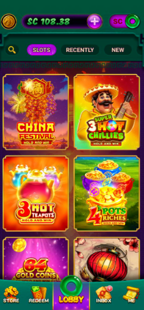
▲ Slots 游戏大厅 — 点击 LOBBY → SLOTS 查看各类老虎机
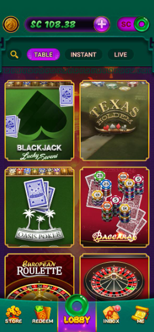
▲ Table 游戏大厅 — 点击 LOBBY → TABLE 查看桌面游戏（Blackjack、Texas Hold'em、Baccarat、Roulette 等）
💰 Played SC & Forfeited SC
What is played SC? / 什么是 Played SC（已玩 SC）？
Played SC is earned through gameplay, and played SC is redeemable.
Played SC 是通过 gameplay 赢得的，可以提现。
Attention / 注意： Played SC from Bonus SC spins will be forfeited if players want to initiate the new redemption before fulfilling the 5x Bonus SC playthrough.
如果玩家在未完成 Bonus SC 的 5 倍投注要求之前发起新的提现，来自 Bonus SC 旋转的 Played SC 将被没收。
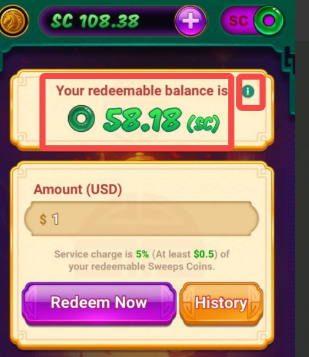
▲ 提现页面：显示 Your redeemable balance，点击 "i" 可查看余额详情
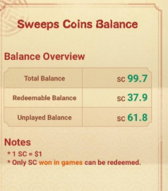
▲ Sweeps Coins Balance 详情：Total Balance / Redeemable Balance / Unplayed Balance
注：1 SC = $1，Only SC won in games can be redeemed.
🎁 Bonus SC
Bonus SC for Tang Luck — What is the main difference from other slot games?
Tang Luck 的 Bonus SC 与其他老虎机游戏的主要区别是什么？
How to get Bonus SC?
Players can get bonus SC through two ways:
玩家可通过两种方式获得 bonus SC：
1. One is from purchase promotions.
1. 通过购买促销活动获得。
For example:
If a player purchase $3 via the Newbie Promotion (150%), except the GC (Gold Coins) the player purchase, our game will also give them 3 free SC (unplayed) plus 1.5 bonus SC (unplayed).
例如：如果玩家通过新手促销（150%）充值 $3，除了玩家购买的 GC（金币）外，游戏还会赠送 3 个免费 SC（unplayed）+ 1.5 个 bonus SC（unplayed）。
2. One is Bonus SC rewards from other free promotions (e.g., those from the Rewards Center).
2. 通过其他免费促销活动获得 bonus SC 奖励（如 Rewards Center）。
What is Unplayed SC?
Unplayed SC is SC that has not been used for gameplay including bonus SC, and all unplayed SC is unredeemable.
Unplayed SC 是尚未用于 gameplay 的 SC（包括 bonus SC），所有 unplayed SC 均不可提现。
How to get unplayed SC?
- One way to get unplayed SC (free) is from free SC given after players make purchases. Normally, players will receive an equal amount of standard unplayed SC after regular purchases. For promotional purchases such as the weekly card bonus, players can earn the same amount of standard unplayed SC plus additional unplayed bonus SC.
Note: Players do not necessarily receive free SC with every purchase. (Not all shop packages come with free SC)
一种方式是在玩家 purchase 后获得 free SC。通常，regular purchase 后玩家会获得等量的 standard unplayed SC。对于 promotional purchase（如 weekly card bonus），玩家可获得等量 standard unplayed SC 加上额外的 unplayed bonus SC。注意：并非每次 purchase 都会获得 free SC（不是所有 shop packages 都包含 free SC）。
- Another way to obtain unplayed bonus SC (free) is via in-game activities (such as buyin rebate bonus, rewards center reward).
另一种方式是通过 in-game activities 获得 unplayed bonus SC（如 buyin rebate bonus、rewards center reward）。
What is Played SC?
Played SC is earned through gameplay, and played SC is redeemable.
Played SC 通过 gameplay 获得，可以提现。
Attention / 注意： Played SC from Bonus SC spins will be forfeited if players want to initiate the new redemption before fulfilling the 5x Bonus SC playthrough.
如果玩家在未完成 Bonus SC 的 5 倍投注要求之前发起新的提现，来自 Bonus SC 旋转的 Played SC 将被没收。
Priority of Funds: Bonus SC is always used first before any other balances are used.
Bonus SC 始终优先于其他任何 balance 被首先使用。
Spin Amount Requirement: All bonus SC is subject to a 5x playthrough (spin) requirement before the redemption feature is unlocked.
所有 bonus SC 在 redemption 功能解锁前需满足 5x playthrough（spin）要求。
Automatic Unlocking: If bonus SC balance reaches zero, any remaining playthrough requirements are automatically waived, and the redemption feature will be restored.
如果 bonus SC balance 归零，所有剩余的 playthrough requirements 将自动免除，redemption 功能将恢复。
Examples for Clarity:
- Example A: If a player has 1 Bonus SC, they must place a total of 5 SC in spin amount to satisfy the requirement and initiate a new redemption.
如果玩家有 1 个 Bonus SC，必须总共下注 5 SC 才能满足要求并发起新的 redemption。
- Example B: If a player has 1 Bonus SC, spin 1 SC, and lose that spin, their bonus SC is gone. Since the player no longer holds bonus SC, the redemption feature will unlock immediately.
如果玩家有 1 个 Bonus SC，spin 1 SC 并输掉，bonus SC 将消失。由于玩家不再持有 bonus SC，redemption 功能将立即解锁。
What is playthrough 5x?
All bonus SC is subject to a 5x playthrough (spin) requirement before the redemption feature is unlocked.
所有 bonus SC 在 redemption 功能解锁前需满足 5x playthrough（spin）要求。
What does it mean if a player's game account has bonus SC?
- Players with bonus SC in their account will have bonus SC used first.
账户中有 bonus SC 的玩家将优先使用 bonus SC。
- Bonus SC will lock the player from initiating new redemption.
Bonus SC 将 lock 玩家发起 new redemption 的功能。
- Redemption feature will be unlocked once players complete the required playthrough (5x).
玩家完成所需的 playthrough（5x）后，redemption 功能将解锁。
- Players may also forfeit the bonus SC and any rewards generated from bonus SC to unlock redemption feature immediately.
玩家也可以 forfeit bonus SC 及由此产生的任何 rewards，以立即解锁 redemption 功能。
Example: If a player's account has 5 redeemable SC and they receive 0.1 bonus SC, the player's redemption will be locked. There are two ways to unlock redemption:
如果玩家账户有 5 个 redeemable SC，并收到 0.1 bonus SC，玩家的 redemption 将被锁定。有两种解锁方式：
- a. When the player spins a total of 0.5 SC (0.1×5 playthrough), redemption will be unlocked.
If the player only spins 0.1 bonus SC and wins 2 SC, then clicks to unlock and confirms forfeit, 2 SC will be forfeited.
当玩家总共 spin 0.5 SC（0.1×5 playthrough）时，redemption 将解锁。如果玩家仅 spin 0.1 bonus SC 并 wins 2 SC，然后点击解锁并确认 forfeit，2 SC 将被 forfeited。
- b. The player can directly forfeit the 0.1 bonus SC to unlock redemption.
玩家可以直接 forfeit 0.1 bonus SC 以解锁 redemption。
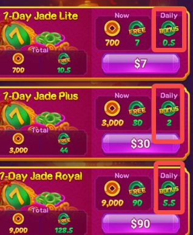
▲ 7-Day Jade 周订阅：购买后可获得 Daily bonus SC（如 Jade Lite 每日 bonus 0.5 SC）
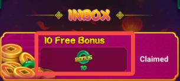
▲ Inbox 站内信：10 Free Bonus 奖励，玩家可在 Inbox 中领取
Forfeit Bonus SC Procedure in the game
- Locked Status: The redemption feature is locked.
锁定状态：redemption 功能被锁定。
- Players click the unlock button then a Forfeit Warning Pop-Up appears:
"Unlock Redemption? Forfeit remaining xx Bonus SC."
玩家点击解锁按钮，出现 Forfeit Warning 弹窗。
- Confirm: Click "Forfeit — Unlock now" → Relevant SC Deducted from account balance → Redemption is Unlocked.
确认：点击 "Forfeit — Unlock now" → 从账户余额扣除相关 SC → Redemption 解锁。
- Then players can click redeem button to redeem.
然后玩家可点击 redeem 按钮进行提现。
Backend: The backend game flow displays the Forfeit Bonus SC.
后台游戏流水显示 Forfeit Bonus SC。
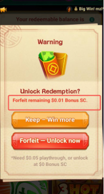
▲ 游戏内 Forfeit Warning 弹窗：玩家点击 "Forfeit — Unlock now" 可放弃 Bonus SC 并解锁提现功能
Forfeit Bonus SC Issue SOP (Tier 1)
Scenario: A player claims they accidentally forfeited their Bonus SC or did not intend to do so and requests a restoration.
玩家声称不小心 forfeited Bonus SC 或并非有意为之，要求恢复。
Tier 1 agents are authorized to handle this directly without creating a task.
一线客服有权直接处理，无需创建工单。
- Explain: Inform the player on the official Bonus SC rules so they understand how the forfeiture occurred.
向玩家说明官方 Bonus SC 规则，让其了解 forfeiture 如何发生。
- Clarify the Incident: Based on the backend game flow, explain the specific details of how/when the forfeiture was triggered to prevent future occurrences.
根据 backend game flow，解释 forfeiture 触发的时间/方式细节，防止未来再次发生。
- Process the Return: Calculate and return the Total SC Forfeited (this includes the sum of Unplayed SC + Played SC).
计算并返还 Total SC Forfeited（包括 Unplayed SC + Played SC 的总和）。
- Final Notification: Inform the player that the forfeited SC has been restored and they can claim it directly from their in-game inbox.
告知玩家 forfeited SC 已恢复，可直接从 in-game inbox 领取。
⚠️ Critical Requirements & Attention
- The "Once-Only" Rule: A forfeited bonus can only be returned once.
Forfeited bonus 只能返还一次。
- Action: Before processing, you must search the Player ID in the Approval List and check compensation details to avoid duplicate compensation for one forfeiture.
处理前，必须在 Approval List 中搜索 Player ID 并检查 compensation details，避免重复补偿。
- Verification: Confirm if a previous "Forfeiture Return" has already been applied. If it has, the request must be denied.
确认是否已应用过 "Forfeiture Return"，如已应用则拒绝请求。
- Compensation sent: * Only send unplayed SC via an in-game message.
仅通过 in-game message 发送 unplayed SC。
- Calculation: The amount sent is the combined total of [Forfeited Played SC] + [Forfeited Unplayed SC].
发送金额 = [Forfeited Played SC] + [Forfeited Unplayed SC] 的总和。
In game message template
- Reason: Forfeited Bonus SC Return
- Forfeit Time: 2026-03-12 04:11:38
- Forfeit Amount: xxSC = xx played + unplayed SC
站内信模板：Reason 为 Forfeited Bonus SC Return，Forfeit Time 为放弃时间，Forfeit Amount 为被放弃的 played + unplayed SC 总和。
Title: Forfeited Bonus SC Return
标题：Forfeited Bonus SC Return
Content: Dear player, our records show that XX Bonus SC was forfeited on 2026-03-12 04:11:38 UTC+0. We have processed a one-time restoration for you. Please claim your Forfeited Bonus SC Return now!
内容：亲爱的玩家，我们的记录显示您的 XX Bonus SC 于 2026-03-12 04:11:38 UTC+0 被放弃。我们已为您处理一次性恢复。请立即领取您的 Forfeited Bonus SC Return！
Bonus SC — How It Works
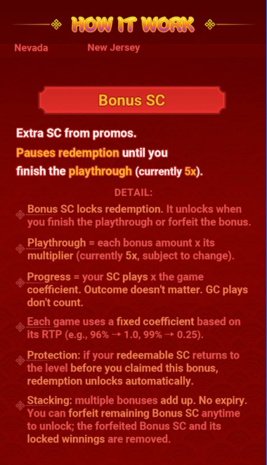
▲ Bonus SC 规则详解：暂停提现直到完成 playthrough（当前为 5x）
- Bonus SC locks redemption. It unlocks when you finish the playthrough or forfeit the bonus.
Bonus SC locks redemption，完成 playthrough 或 forfeit bonus 后解锁。
- Playthrough = each bonus amount × its multiplier (currently 5x, subject to change).
Playthrough = 每个 bonus amount × multiplier（当前 5x，可能变动）。
- Progress = your SC plays × the game coefficient. Outcome doesn't matter. GC plays don't count.
Progress = SC plays × game coefficient，Outcome 不重要，GC plays 不计入。
- Each game uses a fixed coefficient based on its RTP (e.g., 96% → 1.0, 99% → 0.25).
每个游戏根据 RTP 使用 fixed coefficient（例如 96% → 1.0，99% → 0.25）。
- Protection: if your redeemable SC returns to the level before you claimed this bonus, redemption unlocks automatically.
如果 redeemable SC 回到领取此 bonus 前的水平，redemption 自动解锁。
- Stacking: multiple bonuses add up. No expiry. You can forfeit remaining Bonus SC anytime to unlock; the forfeited Bonus SC and its locked winnings are removed.
多个 bonuses 累加，无 expiry，可随时 forfeit 剩余 Bonus SC 以解锁；forfeited Bonus SC 及其 locked winnings 被移除。
🔄 SC / GC Switch
玩家可通过点击首页右上角的 SC / GC 按钮，在两种游戏模式之间自由切换。
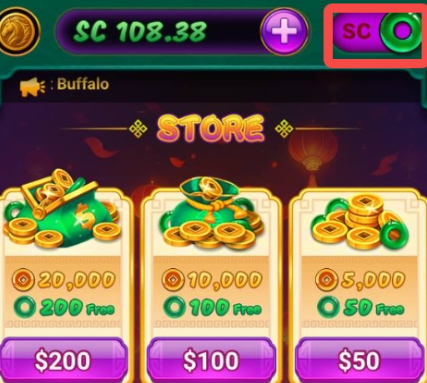
▲ SC 模式：点击右上角 SC 按钮，使用 Sweeps Coins 进行游戏
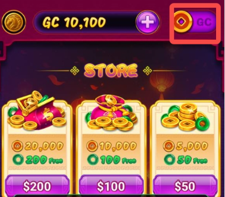
▲ GC 模式：点击右上角 GC 按钮，使用 Gold Coins 进行游戏
👤 ME Page
点击底部导航栏的 ME 按钮，可进入个人中心页面，包含以下功能入口：
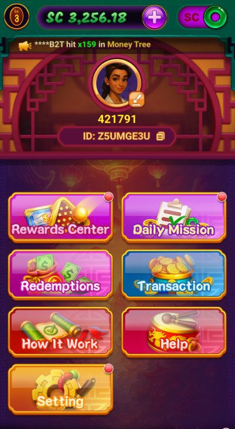
▲ ME 页面：包含 Rewards Center、Daily Mission、Redemptions、Transaction、How It Work、Help、Setting 等功能
(1) Setting
点击 ME 页面的 Setting 按钮进入设置页面。
a. Sound & Music 开关
玩家可在 Setting 页面顶部开启或关闭 Sound（音效） 和 Music（音乐）。
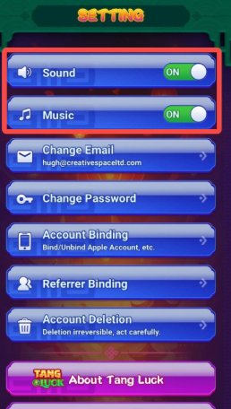
▲ Setting 页面：Sound 和 Music 开关位于顶部，可自由开启/关闭
b. Logout 登出
Setting 页面最下方提供 Logout 按钮，玩家点击即可退出当前账号登录。
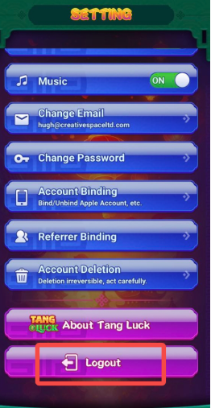
▲ Setting 页面最下方：Logout 按钮，点击可退出当前账号
c. Promo Code 兑换码
玩家可通过 ME → SETTINGS → Promo Code 输入兑换码。
Promo codes are typically shared through our official social media channels. Suggest players follow us and keep an eye on our event posts here: Facebook, Twitter, Instagram etc.
Promo codes 通过官方社交媒体渠道分享，建议玩家关注 Facebook、Twitter、Instagram 等获取最新活动信息。
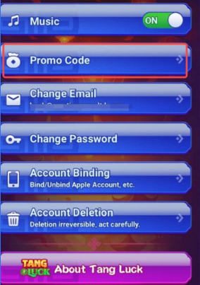
▲ About Tang Luck 页面：底部显示官方社交媒体链接（Facebook、Instagram、YouTube、X/Twitter），建议玩家关注以获取最新 Promo Code 和活动信息
d. About Tang Luck 关于页面
About Tang Luck
玩家在 Setting 页面中点击 About Tang Luck 可进入关于页面，包含以下 5 个功能按钮：
Click About Tang Luck in the Settings page to access the about page with 5 function buttons.
- Privacy Policy — 隐私政策
- Terms Of Services — 服务条款
- Responsible Social Gameplay — 负责任社交游戏
- Sweeps Rules — 抽奖规则
- Postal Request SC — AMOE 替代参与方式：玩家可通过邮寄方式申请免费 SC
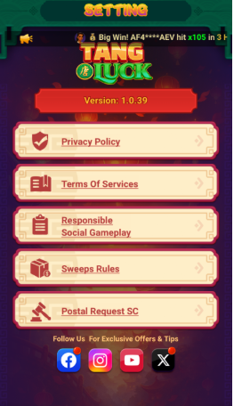
▲ About Tang Luck 页面：包含 Privacy Policy、Terms Of Services、Responsible Social Gameplay、Sweeps Rules、Postal Request SC 五个入口
e. Privacy Mode & Big Win Feed
Tang Luck has introduced two new features designed to give players more control over their gaming experience and privacy.
Tang Luck 推出了两项新功能，让玩家更好地控制游戏体验和隐私。
How to Enable or Disable These Features
To find these new toggles, navigate to: ME → Settings → Toggle On/Off (Privacy Mode / Big Win Feed).
在 ME → Settings 中找到切换开关（Privacy Mode / Big Win Feed）。
What Happens When Turned ON?
- Privacy Mode
隐私模式
- The rewards are hidden from other players.
奖励对其他玩家隐藏。
- Other players can't cheer up for you.
其他玩家无法为您喝彩。
- Other players will only see the Player ID in the all Rankings with the middle four digits hidden (e.g., 123****890).
其他玩家在排行榜中只能看到 Player ID，中间四位隐藏（如 123****890）。
- Big Win Feed
大奖动态
- No longer see big win notifications from other players.
不再看到其他玩家的大奖通知。
- Can't cheer up for other players.
无法为其他玩家喝彩。
Note: Enabling these features is entirely optional. If players enjoy seeing the community's big wins and participating in the cheer-up bonus features, they can leave them turned off.
注意：启用这些功能完全可选。如果玩家喜欢看到社区的大奖并参与喝彩奖励功能，可以保持关闭状态。
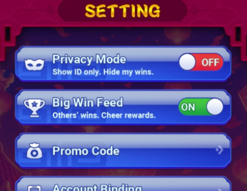
▲ Setting 页面：Privacy Mode（隐藏奖励、隐藏 ID）和 Big Win Feed（关闭他人大奖通知）开关
(2) How It Work
点击 ME 页面的 How It Work 按钮，可查看游戏的重要规则说明，包括以下内容：
Click the How It Work button on the ME page to view important game rules.
- Redemption Rules
提现规则
- Safety and Privacy
安全与隐私
- Fair Games (RNG)
公平游戏（RNG）
- Eligibility & Check (Non-operation Regions)
资格与地区检查（非运营地区）
- Bonus SC
奖励 SC
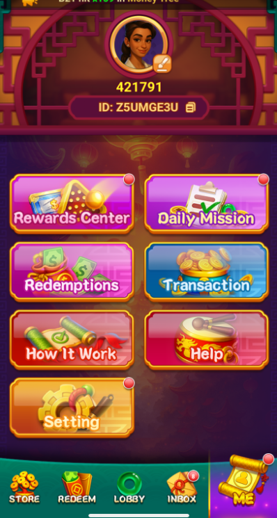
▲ How It Work 菜单：包含 Redemption Rules、Safety and Privacy、Fair Games (RNG)、Eligibility & Check、Bonus SC 等规则入口
Getting You Money / 提现说明
- 3-Day Redemption Promise. Late? Speed Credit. If a redemption takes longer than 3 business days after approval, we add Speed Credit: 1% per late business day, up to 10%, auto-credited as Bonus SC (5x playthrough).
Redemption 批准后超过 3 个工作日，将添加 Speed Credit：每延迟一个工作日 1%，最高 10%，自动作为 Bonus SC（5x playthrough）发放。
- How Redeem Works: Get GC → Get SC (free) → Win SC → Redeem
获得 GC → 获得 SC（free）→ Win SC → Redeem。
- GC = Gold Coins, for fun, not redeemable.
GC = Gold Coins，仅供娱乐，不可 redeemable。
- SC = Sweeps Coins; only your SC winnings are redeemable.
SC = Sweeps Coins，只有 SC winnings 可 redeemable。
- Example: You start with 100 SC gifted and Win 70 SC → Redeemable = 70 SC.
以 100 SC gifted 开始，Win 70 SC → Redeemable = 70 SC。
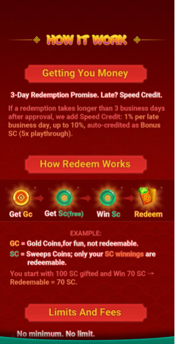
▲ How It Work — Getting You Money：3-Day Redemption Promise、How Redeem Works 流程说明
Limits And Fees / 限额与手续费
- No minimum. No limit.
无最低限额，无上限。
- Daily cap: $5,000 (Club $15,000).
Daily cap: $5,000（Club $15,000）。
- Fee 5% base (Club 2%).
Fee 5% base（Club 2%）。
- Methods: PayPal、ACH、Debit Card、Venmo
方式：PayPal、ACH、Debit Card、Venmo。
Safety And Privacy / 安全与隐私
- Privacy protected. Payments via trusted partners.
Privacy 受保护，Payments 通过可信合作伙伴。
Fair Games / 公平游戏
- Independent RNG tests
Independent RNG 测试。
- RTP shown per game (~96%)
每款游戏显示 RTP（~96%）。
- Gaming Labs Certified
Gaming Labs Certified。
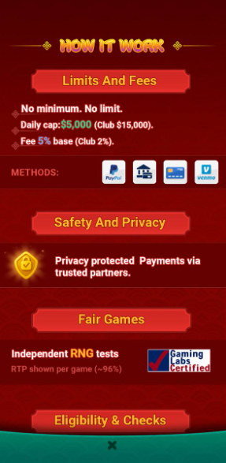
▲ How It Work — Limits And Fees：Daily cap $5,000、Fee 5% base；Safety And Privacy；Fair Games (RNG Certified)
Eligibility & Checks / 资格与地区检查
- SC play needs Geolocation.
SC 游戏需要地理位置验证。
- To buy coins we verify Age.
购买金币需验证年龄。
- To redeem we verify ID.
提现需验证 ID。
- Over $2,000 we ask for SSN.
超过 $2,000 需提供 SSN。
- Over $20,000 we ask for POA.
超过 $20,000 需提供地址证明（POA）。
Restricted States（非法州）： Connecticut, Delaware, Kentucky, Michigan, Washington, New York, Montana, Louisiana, Nevada, New Jersey
注：Tang Luck 的非法州与通用知识库中的非法州一致，具体请查阅 通用-States。
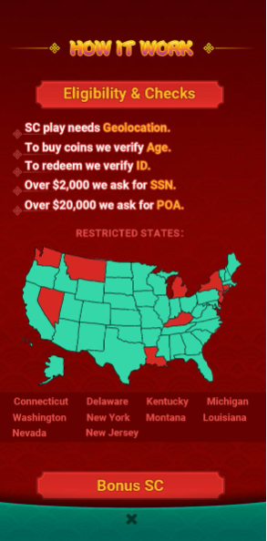
▲ How It Work — Eligibility & Checks：SC play 需要地理位置验证；提现需验证 ID；$2,000+ 需 SSN；$20,000+ 需 POA；下方显示美国非法州地图
Bonus SC / 奖励 SC 规则
- Extra SC from promos.
来自促销的额外 SC。
- Pauses redemption until you finish the playthrough (currently 5x).
暂停提现直到完成 playthrough（当前 5x）。
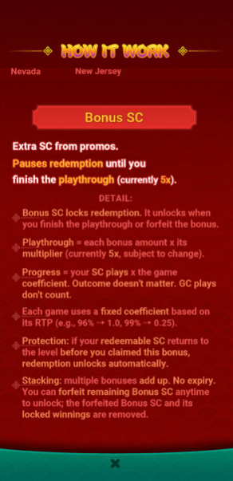
▲ How It Work — Bonus SC：Extra SC from promos，暂停提现直到完成 playthrough（当前 5x）
(3) Redemptions
点击 ME 页面的 Redemptions 按钮，玩家可查看自己的提现历史记录。
Click the Redemptions button on the ME page to view withdrawal history.
- 页面显示所有提现申请的状态：ALL / COMPLETED / PENDING / DECLINED
The page shows all withdrawal request statuses.
- 每条记录显示：提现方式（如 ACH）、尾号、状态、金额、时间
Each record shows the withdrawal method, last digits, status, amount, and time.

▲ Redemptions 页面：显示玩家提现历史，包含 ALL / COMPLETED / PENDING / DECLINED 四个标签页
(4) Transaction
点击 ME 页面的 Transaction 按钮，进入交易记录页面。
请注意：SC 模式下仅显示 SC 交易记录。玩家可在此页面查看自己的交易历史。
a. Balance（余额变动）
该页面显示每次游戏时的交易记录（同一老虎机游戏的一轮），按所选日期展示每笔变动的时间、原因和金额。
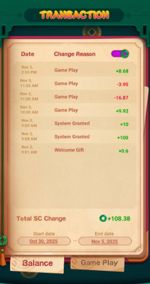
▲ Transaction — Balance：显示每次游戏时的余额变动记录（Date、Change Reason、金额），底部显示 Total SC Change 和日期范围
b. Game Play（游戏汇总）
该页面显示每天的总下注 SC 和总赢/亏金额。
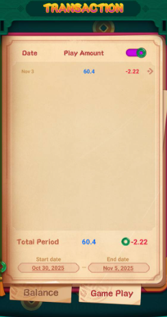
▲ Transaction — Game Play：显示每天的总下注 SC 和总赢/亏金额（Total Period、Play Amount、Win/Loss）
c. Specific Game Play Transaction（具体机台交易）
Specific Game Play Transaction
点击某条 Game Play 记录后，可查看该日期下具体每个机台的输赢明细，包括每次旋转的下注金额和赢取金额。
Click a Game Play record to view detailed win/loss for each machine on that date.
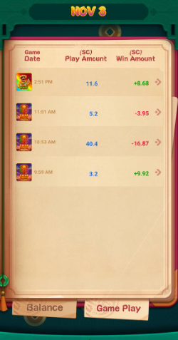
▲ Specific Game Play Transaction：显示所选日期下具体机台的每次旋转记录（Game、Play Amount、Win Amount）
(5) Help
点击 ME 页面的 Help 按钮，可直接进入游戏内客服聊天界面，联系客服支持团队。
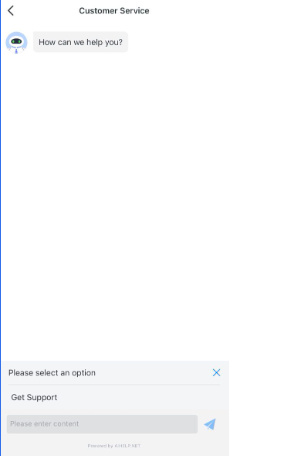
▲ Help 页面：Customer Service 聊天界面，玩家可直接发送消息联系客服
⬇️ Download
Tang Luck Official Website： https://tangluck.com
当玩家询问下载链接时，请发送官方网址给玩家，引导按以下步骤操作：
- 点击官网页面的 "Play Now" 按钮
Click the "Play Now" button on the official website.
- Android 手机将自动跳转至 Google Play Store
Android phones will automatically redirect to Google Play Store.
- iPhone 将自动跳转至 iOS App Store
iPhones will automatically redirect to iOS App Store.
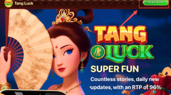
▲ 下载指引：引导玩家访问 tangluck.com，点击 Play Now 按钮，根据设备自动跳转至对应应用商店
❓ FAQ
| Question | Reference Reply | 中文参考回复 |
|---|
| Can earn real money? |
Hello! Thank you for reaching out to us. You can earn SC through our SC games, and the SC you win is redeemable, with 1 SC equivalent to $1. Please feel free to contact us if you have any further questions or concerns. We are always here to assist you and ensure your gaming experience is enjoyable. |
您好！感谢您联系我们。您可以通过我们的 SC 游戏赚取 SC，赢得的 SC 可以提现，1 SC = $1。如有任何疑问，请随时联系我们。我们随时为您提供帮助，确保您拥有愉快的游戏体验！ |
| Transaction |
Hello! After reviewing your game account, we found everything to be in order. You can easily check your transaction history on your end. Please navigate to your profile page and click on the transactions to view the details of your game history. Thank you for your understanding! |
您好！经审核您的游戏账户，一切正常。您可以在您的设备上轻松查看交易历史。请进入个人资料页面，点击 transactions 查看游戏历史详情。感谢您的理解！ |
| How to play with GC/SC? |
Hello! You can easily switch the game mode by clicking the SC/GC button located in the top right corner. If you have any further questions or concerns, please feel free to reach out to us. We're always here to assist you and ensure you have an enjoyable gaming experience! |
您好！您可以轻松切换游戏模式，只需点击右上角的 SC/GC 按钮。如有任何疑问，请随时联系我们。我们随时为您提供帮助，确保您拥有愉快的游戏体验！ |
| Sign up bonus/reward? |
Dear player, thank you for supporting our game! Please check to see if you have successfully registered your game account. If not, kindly register using your email address, and all players will receive a Welcome Gift (0.6 SC + 100 GC) after successful registration. If you have any further concerns or issues, please feel free to reach out to us. |
亲爱的玩家，感谢您支持我们的游戏！请确认您是否已成功注册游戏账户。如果尚未注册，请使用您的邮箱地址注册，所有玩家在成功注册后将获得 Welcome Gift（0.6 SC + 100 GC）。如有任何疑问，请随时联系我们。 |
| How to change account email? |
Hello! Thank you so much for reaching out to us. If you wish to change your Account Email, it's a simple process. Just navigate to the Me page, select Setting, and then choose Change Email. Follow the on-screen instructions, and you'll be all set! Please don't hesitate to contact us if you have any further concerns. We truly appreciate your support for our game. |
您好！非常感谢您联系我们。如果您希望更改账户邮箱，操作非常简单。只需前往 Me 页面，选择 Setting，然后点击 Change Email。按照屏幕上的指示操作即可！如有任何疑问，请随时联系我们。非常感谢您对我们游戏的支持！ |
| Delete account |
Dear player, we sincerely apologize for the unpleasant experience you've had in our game. We would greatly appreciate it if you could share the reason with us, as we truly value each and every one of our players. If you decide to delete your game account, you can easily do so on your end. Please navigate to the Me page, then to Settings, and select Account Deletion to initiate the process. Please don't hesitate to contact us with any further questions or concerns. We are always here to assist you and make your gaming experience enjoyable! |
亲爱的玩家，我们 sincerely 为给您带来的不愉快体验道歉。如果您能与我们分享原因，我们将不胜感激，因为我们 truly 重视每一位玩家。如果您决定删除游戏账户，您可以自行操作。请前往 Me 页面，然后到 Settings，选择 Account Deletion 开始流程。如有任何疑问，请随时联系我们。我们随时为您提供帮助，确保您拥有愉快的游戏体验！ |
| Don't want to delete the game account? (When the player initiates the deletion on his side?) |
Hello! We've reviewed your account and noticed that it seems to have been requested a deletion from your device settings. This is why you're currently unable to play. To recover your account, please go to Setting → Account → Restore Account and follow the on-screen instructions. Once your account is restored, you'll be able to access your games again. |
您好！我们已审核您的账户，发现似乎已从您的设备设置中请求删除。这就是您目前无法玩游戏的原因。要恢复您的账户，请前往 Setting → Account → Restore Account，按照屏幕上的指示操作。账户恢复后，您将能够再次访问游戏。 |
| What is the minimum redemption amount? |
Hello! Just a friendly reminder that the minimum redemption amount is $1. Please be aware that a processing fee of 5% of the redemption SC is applicable. Additionally, there is a minimum processing fee of 0.5 SC, meaning that redemptions of less than 10 SC will incur a charge of 0.5 SC. Thank you for your continued support of our game! |
您好！最低提现金额为 $1。请注意，提现 SC 需收取 5% 的手续费。此外，最低手续费为 0.5 SC，即提现少于 10 SC 将收取 0.5 SC 手续费。感谢您对我们游戏的持续支持！ |
| Why SC lost? (When the player forfeit bonus SC) |
Hello! We wanted to let you know that the redemption will be temporarily locked if there are any bonuses in your game account. To unlock the redemption, you'll need to fulfil a playthrough requirement of 5x, or you can choose to forfeit the bonus SC along with any winnings derived from it. Please confirm your choice if you decide to forfeit. Thank you for your understanding! |
您好！如果游戏账户中有任何 bonus SC，提现将暂时被锁定。要解锁提现，您需要完成 5x 的 playthrough 要求，或者您可以选择放弃 bonus SC 及其产生的任何收益。如果您决定放弃，请确认您的选择。感谢您的理解！ |
| Why redemption is locked? (When the player's bonus SC process doesn't meet the Playthrough) |
Hello! We wanted to let you know that the redemption will be temporarily locked if there are any bonuses in your game account. To unlock the redemption, you'll need to fulfil a playthrough requirement of 5x, or you can choose to forfeit the bonus SC along with any winnings derived from it. We kindly recommend completing a playthrough requirement of 5x to ensure you don't lose any Bonus SC. Thank you for your understanding! |
您好！如果游戏账户中有任何 bonus SC，提现将暂时被锁定。要解锁提现，您需要完成 5x 的 playthrough 要求，或者您可以选择放弃 bonus SC 及其产生的任何收益。我们建议完成 5x playthrough 要求以确保您不会损失任何 Bonus SC。感谢您的理解！ |
| Cancel redemption |
Hello there! Players have the option to cancel their redemption request while checking their redemption records, provided that the redemption has not yet been processed. Please take a moment to review your redemption records, select the relevant redemption, and click on the cancel redemption button. If you are unable to cancel, it indicates that the redemption has already been processed. Thank you for your understanding! |
您好！玩家可以在查看提现记录时取消提现请求，前提是提现尚未处理。请查看您的提现记录，选择相关提现，然后点击取消提现按钮。如果无法取消，说明提现已正在处理中。感谢您的理解！ |
| What is Bonus SC? |
Hello there! Bonus SC are special credits that you can earn through our exciting promotions. Just a friendly reminder that these credits come with a playthrough requirement before you can redeem them. |
您好！Bonus SC 是您可以通过我们的精彩促销活动获得的特殊积分。提醒一下，这些积分在提现前需要满足 playthrough 要求。 |
| How does the playthrough work? |
Dear player, we would like to inform you that each bonus SC comes with a 5x playthrough requirement. For instance, if you receive 100 Bonus SC, you will need to play a total of 500 SC before you can redeem. |
亲爱的玩家，每个 bonus SC 都有 5x playthrough 要求。例如，如果您收到 100 Bonus SC，您需要总共玩 500 SC 才能提现。 |
| What does it mean to forfeit? |
Hello! We wanted to let you know that the redemption will be temporarily locked if there are any bonuses in your game account. To unlock the redemption, you'll need to fulfil a playthrough requirement of 5x, or you can choose to forfeit the bonus SC along with any winnings derived from it. Please confirm your choice if you decide to forfeit. Thank you for your understanding! |
您好！如果游戏账户中有任何 bonus SC，提现将暂时被锁定。要解锁提现，您需要完成 5x playthrough 要求，或者您可以选择放弃 bonus SC 及其产生的任何收益。如果您决定放弃，请确认您的选择。感谢您的理解！ |
| How to unbind old ACH bank info and link new bank account? |
Hi, initiate a new redemption request first, tap the red "-" icon beside bound ACH info to remove existing bank details then follow prompts to bind new ACH account. |
您好，先发起新的提现请求，点击已绑定 ACH 信息旁边的红色 "-" 图标删除现有银行信息，然后按提示绑定新的 ACH 账户。 |
| How long is standard redemption processing time; what if fund is overdue? |
Hi, most redemptions complete within 1 business day and all redemptions are fully processed within maximum 3 business days. Contact support with your redemption details for follow-up if fund arrival exceeds expected timeline; eligible users may apply delay compensation per platform policy. |
您好，大多数提现在 1 个工作日内完成，所有提现在最多 3 个工作日内完全处理。如果资金到账超过预期时间，请联系客服提供提现详情进行跟进；符合条件的用户可按平台政策申请延迟补偿。 |
| Can I cancel my submitted pending redemption application? |
Hello! Please note that cancellation is only possible before your redemption enters the formal payment processing stage. You can find the target one on the redemption record page and simply tap the cancel button. If the cancel option is greyed out, it means that the order is currently being processed and cannot be canceled. |
您好！请注意，只有在提现进入正式支付处理阶段之前才能取消。您可以在提现记录页面找到目标提现，然后点击取消按钮。如果取消选项呈灰色，说明订单正在处理中，无法取消。 |
| How are redemption service fees calculated & minimum redemption limit? |
Hi, 1. Redemption fee ranges 2%~5% based on user Loyalty Tier (higher tier = lower rate), single transaction minimum fee: $0.5; Fee = Redemption Amount × corresponding tier rate. 2. Platform sets no official minimum redemption cap but most payment channels enforce $1 minimum single redemption. |
您好，1. 提现费率根据用户 Loyalty 等级为 2%~5%（等级越高费率越低），单笔最低手续费 $0.5；手续费 = 提现金额 × 对应等级费率。2. 平台未设定官方最低提现上限，但大多数支付渠道要求单笔最低 $1。 |
| Why KYC verification is mandatory before large redemptions? |
Hi, tiered KYC is required by compliance and fund security regulations to confirm account ownership; required verification level differs based on your total redemption value. |
您好，分层 KYC 是合规和资金安全法规要求的，用于确认账户所有权；所需验证级别根据您的总提现金额而定。 |
| Tiered KYC document requirement by redemption amount |
Hi: ≤$2000: Government-issued ID/Driver License verification; $2000-$20000: SSN verification; >$20000: 3-month valid residential Proof of Address (POA). |
您好：≤$2000：政府签发的身份证/驾照验证；$2000-$20000：SSN 验证；>$20000：3 个月内有效的居住地址证明（POA）。 |
| What payment channels are supported for in-app GC purchase? |
Hi, Please check the available payment options on the checkout page and proceed with one of the active methods. |
您好，请在结账页面查看可用的支付选项，然后选择其中一种有效方式进行支付。 |
| My bank got charged but purchased GC is not credited to game balance |
Hi, payment success does not guarantee fund receipt by our platform for occasional transaction failure; suspended bank deduction will be auto-refunded by your bank shortly. Keep your payment order screenshot and contact support for manual verification if needed. |
您好，支付成功并不保证平台一定能收到资金，偶尔的交易失败会导致银行扣款被暂停，银行将很快自动退款。请保留支付订单截图，如需人工验证请联系客服。 |
| My card payment keeps declining and purchase fails |
Hi, common failure causes: insufficient card balance, unstable network, bank restriction on online/international transactions or excessive payment attempts. All pending held funds will be auto-refunded; enable cross-border transaction on your card, switch stable network or use an alternate payment method to retry later. |
您好，常见失败原因：卡余额不足、网络不稳定、银行限制在线/国际交易或支付尝试过多。所有待处理的冻结资金将自动退款；请在您的卡上启用跨境交易，切换稳定网络或使用其他支付方式稍后重试。 |
| Can I apply for a refund after completing in-app purchases? |
Hi, virtual game items are generally non-refundable once delivered. For special exceptional cases, submit detailed situation to our support team for case-by-case review. |
您好，虚拟游戏物品一旦交付通常不可退款。对于特殊例外情况，请向客服团队提交详细情况，进行个案审核。 |
| What's the difference between GC and SC? Can SC be exchanged to USD? |
Hi: GC (Gold Coin): purchased currency only for in-game entertainment, non-redeemable; SC (Sweeps Coin): obtained via free activities or GC purchase bonuses, eligible for redemption at fixed rate: 1 SC = 1 USD. |
您好：GC（金币）：仅用于游戏娱乐的购买货币，不可提现；SC（Sweep Coin）：通过免费活动或 GC 购买奖励获得，可按固定比率提现：1 SC = 1 USD。 |
| Do GC/SC expire after account inactivity? Can I transfer coins to other players? |
Hi, GC & SC never expire for active accounts; accounts with over 90 consecutive days of no login are marked inactive and subject to coin clearance. GC/SC are personal-use only; gifting, trading or transferring coins to third users is strictly prohibited. |
您好，活跃账户的 GC 和 SC 永不过期；连续超过 90 天未登录的账户将被标记为非活跃，并可能进行积分清理。GC/SC 仅限个人使用；严禁向第三方用户赠送、交易或转移积分。 |
| Why my SC balance turns negative? |
Hi, negative SC balance usually results from related payment order being marked fraudulent or disputed by payment providers; corresponding bonus SC from that order will be temporarily deducted automatically. Check your transaction history or contact support for clarification. |
您好，SC 余额为负通常是因为相关支付订单被标记为欺诈或支付提供商争议；该订单对应的 bonus SC 将被自动临时扣除。请检查您的交易记录或联系客服澄清。 |
| App fails to launch or keeps crashing randomly |
Hi, fix in order: 1. Clear all background apps then restart Tang Luck; 2. Update APP to newest official version; 3. Free up device storage & clear app cache; 4. Switch stable network. Submit your device model + OS version to support if crash persists. |
您好，按顺序尝试：1. 清除所有后台应用然后重启 Tang Luck；2. 将应用更新到最新官方版本；3. 释放设备存储空间并清除应用缓存；4. 切换稳定网络。如果崩溃持续，请向客服提交您的设备型号和操作系统版本。 |
| Black screen or continuous page lagging |
Hi, poor network is the main cause. Switch stable Wi-Fi/cellular data, clear app cache, close idle background apps or restart your phone to resolve display lag issues. |
您好，网络不稳定是主要原因。切换稳定的 Wi-Fi/蜂窝数据，清除应用缓存，关闭闲置后台应用或重启手机以解决显示延迟问题。 |
| No in-game audio / game sound missing |
Hi, check: 1. Device system volume is unmuted; 2. In-app audio toggle is enabled; 3. Phone not set to silent mode. Restart APP or device if sound still unavailable. |
您好，请检查：1. 设备系统音量未静音；2. 应用内音频开关已启用；3. 手机未设置为静音模式。如果声音仍然不可用，请重启应用或设备。 |
👤 Account
Account Registration
Players are required to link an email address and may only maintain one game account.
玩家需要绑定邮箱地址，且只能维护一个游戏账户。
Upon first entering the game, players will be assigned a guest account with a random Player ID. Players can bind an email address via ME → Settings → Change Email to complete registration.
首次进入游戏时，玩家将获得一个带有随机 Player ID 的 guest 账户。玩家可通过 ME → Settings → Change Email 绑定邮箱完成注册。
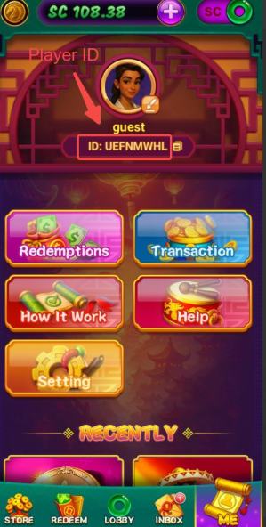
▲ ME 页面显示 Player ID（guest 状态），点击 Settings 可绑定邮箱
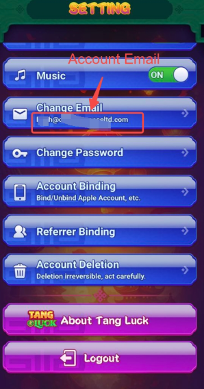
▲ Setting 页面：Change Email 入口，显示当前绑定的邮箱地址
Other Binding Ways
Players can bind their account using the following third-party methods:
玩家可使用以下第三方方式绑定账户：
Navigate to ME → Settings → Account Binding to link or unlink third-party accounts.
前往 ME → Settings → Account Binding 绑定或解绑第三方账户。
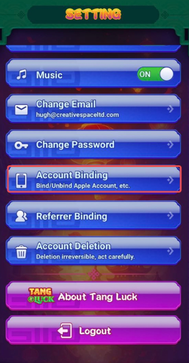
▲ Setting 页面：Account Binding 入口（Bind/Unbind Apple Account, etc.）
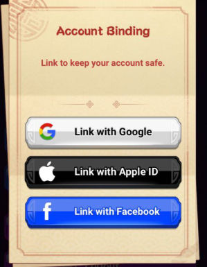
▲ Account Binding 页面：可选择 Link with Google / Apple ID / Facebook
Account Revise
(1) Change Email
Players are allowed to change their bound email address within the game. To complete the change, verification of the new email and confirmation of the account password are required.
玩家可在游戏内更改绑定的邮箱地址。完成更改需要验证新邮箱并确认账户密码。
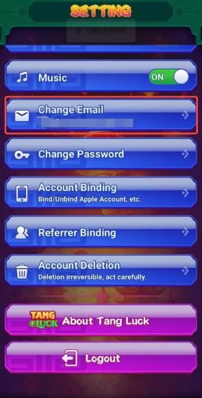
▲ Setting 页面：Change Email 入口
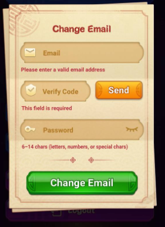
▲ Change Email 页面：输入新邮箱、验证码、密码后点击 Change Email
(2) Change Password
Players are allowed to change their passwords within the game. To complete the change, verification of the account email and confirmation of the new password are required.
玩家可在游戏内更改密码。完成更改需要验证账户邮箱并确认新密码。
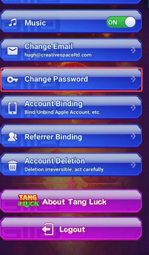
▲ Setting 页面：Change Password 入口
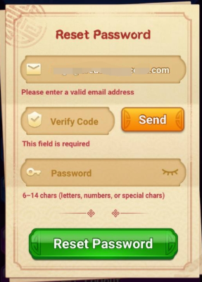
▲ Reset Password 页面：输入邮箱、验证码、新密码（6-14 位字母/数字/特殊字符）
Account Deletion
Players are allowed to delete their game account within the game.
玩家可在游戏内删除游戏账户。
Steps: ME Page → Setting → Account Deletion → Confirm Delete (enter the verification code)
步骤：ME 页面 → Setting → Account Deletion → 确认删除（输入验证码）
⚠️ Account deletion cannot be undone. Click "Delete" to agree to the account deletion agreement and confirm deletion.
账户删除不可撤销。点击 "Delete" 同意账户删除协议并确认删除。
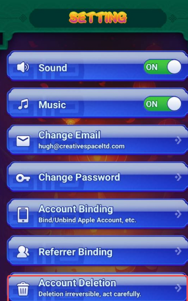
▲ Setting 页面：Account Deletion 入口（Deletion irreversible, act carefully.）
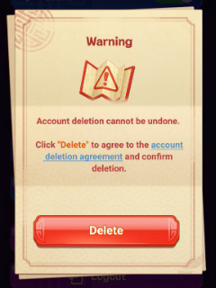
▲ Account Deletion Warning：Account deletion cannot be undone，点击 Delete 确认
Account Restoration
Players can restore their game account within 30 days of confirming its deletion.
玩家可在确认删除后的 30 天内恢复游戏账户。
Steps: ME Page → Setting → Account → Restore Account (enter the verification code)
步骤：ME 页面 → Setting → Account → Restore Account（输入验证码）
Merge Account Function
Note: Only duplicate KYC verification will trigger this function.
注意：仅重复 KYC 验证会触发此功能。
A player holds two accounts: Account A and Account B. Account A has completed KYC-ID verification, while Account B remains unverified. When the player initiates KYC-ID verification for Account B, if the submitted information matches that of Account A, the system will prompt the player with two questions: whether they already own Account A, and whether they wish to merge Account B into Account A.
玩家持有两个账户：Account A 和 Account B。Account A 已完成 KYC-ID 验证，Account B 未验证。当玩家为 Account B 发起 KYC-ID 验证时，如果提交的信息与 Account A 匹配，系统将提示玩家两个问题：是否已拥有 Account A，以及是否希望将 Account B 合并到 Account A。
If the player consents to the merge, all assets linked to Account B will be transferred to Account A. Account B will then be permanently deleted and disabled, with no further access allowed.
如果玩家同意合并，Account B 的所有资产将转移到 Account A。Account B 将被永久删除和禁用，无法再次访问。
⚠️ Important: If the player did not complete the merge process when triggering this function and requests our assistance, we are unable to manually provide the merge function. We kindly ask the player to select one game account and subsequently resolve the verification issue as before.
重要：如果玩家触发此功能时未完成合并流程并请求协助，我们无法手动提供合并功能。请玩家选择一个游戏账户，然后按之前的方式解决验证问题。
Backend account merge function for Tang Luck:
In the game flow, when filtering "Merge Account", the "Method" line will display the related merged game account.
后台合并功能：在游戏流水中筛选 "Merge Account" 时，"Method" 行将显示相关合并的游戏账户。
Examples:
- If you search XF4WTCS4, you will see NM3XT444 in the method line, and SC is deducted from XF4WTCS4. → This indicates that XF4WTCS4 was merged into NM3XT444.
搜索 XF4WTCS4 时，method 行显示 NM3XT444，且 SC 从 XF4WTCS4 扣除 → 表示 XF4WTCS4 已合并到 NM3XT444。
- If you search NM3XT444, you will see XF4WTCS4 in the method line, and SC is added to NM3XT444. → This indicates that NM3XT444 has merged XF4WTCS4.
搜索 NM3XT444 时，method 行显示 XF4WTCS4，且 SC 添加到 NM3XT444 → 表示 NM3XT444 已合并 XF4WTCS4。
Tang Luck: Merge Account Function Update
The account merge function will automatically trigger under the following two conditions:
账户合并功能在以下两种条件下自动触发：
- Duplicate KYC Verification: When a player submits the same KYC Identity Verification details across multiple accounts.
重复 KYC 验证：玩家在多个账户提交相同的 KYC 身份验证信息。
- Duplicate Redemption Accounts: When a player attempts to link/bind the same redemption account (such as PayPal or ACH) to more than one game profile.
重复提现账户：玩家尝试将同一个提现账户（如 PayPal 或 ACH）绑定到多个游戏资料。
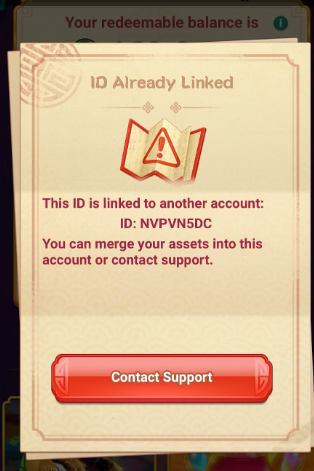
▲ ID Already Linked 弹窗：提示该 ID 已关联到另一个账户，可选择合并资产或联系客服
How to Freeze a Player's Account
When you need to freeze an account, please go to Backend → Overview → Action → Change status.
冻结账户操作：Backend → Overview → Action → Change status。
Place the ticket ID and freeze reason, and choose 3 of the actions: Ban Game, Ban Charge, Ban Cash (Ban all except for login).
输入工单 ID 和冻结原因，选择 3 个操作：Ban Game、Ban Charge、Ban Cash（禁止除登录外的所有操作）。
⚠️ The ban actions need to be operated separately, so a total of 3 action submissions are needed to freeze the account.
禁止操作需要分别执行，因此冻结账户共需提交 3 次操作。
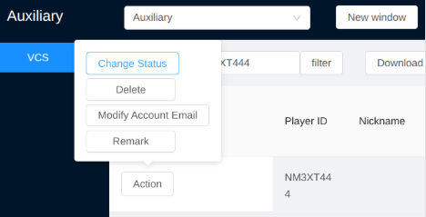
▲ 后台操作：Auxiliary → VCS → Action → Change Status / Delete / Modify Account Email / Remark
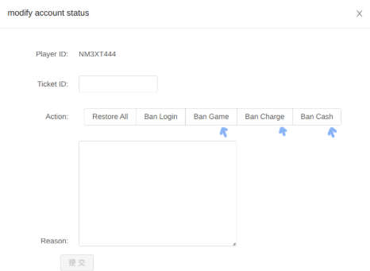
▲ Modify Account Status：选择 Ban Game / Ban Charge / Ban Cash（需分别提交 3 次）
💳 Purchase
Recharge Channels
| 渠道 | 状态 | 备注 |
|---|
| PayPal | ✅ 可用 | 多个供应商 |
| Credit Card | ✅ 可用 | 通用规则 |
| Debit Card | ✅ 可用 | 部分借记卡可直充 |
| Apple Pay | ✅ 可用 | 不支持 Apple Cash |
| ACH Pay | ❌ 不可用 | 仅 Acorn 项目组支持 |
| Cash App | ❌ 已停用 | 2025-07-11 起停用 |
Crypto Purchase Channel
Tang Luck supports Crypto Purchase Channel as an alternative payment method.
Tang Luck 支持 Crypto Purchase Channel 作为替代支付方式。
Supported Channels:
- PayPal
- Credit Card
- Apple Pay
- Crypto Purchase Channel
加密货币购买渠道
⚠️ Citcon Cash App 已下线（从充值渠道中删除）
Citcon Cash App has been removed from purchase channels.
Purchase Procedure Through Crypto Channel:
- Choose the purchase amount.
选择购买金额。
- Select the Crypto payment channel.
选择 Crypto 支付渠道。
- You will be redirected to our third-party transaction page to choose your preferred platform.
将跳转至第三方交易页面选择首选平台。
- Complete your payment securely via the selected Crypto provider.
通过选定的 Crypto 提供商安全完成支付。
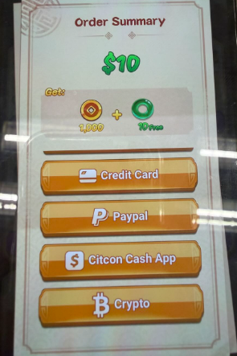
▲ 充值页面：Order Summary 显示购买金额，可选择 Credit Card、PayPal、Bitcoin 等支付方式
Purchase Packages
Store Packages: GC + Free SC (Unplayed SC, corresponding to the purchase amount)
商店套餐：GC + 免费 SC（Unplayed SC，对应购买金额）
Purchase Promotion Events: GC + Free SC (Unplayed SC, corresponding to the purchase amount) + Bonus SC (Any discounts included)
购买促销活动：GC + 免费 SC（Unplayed SC，对应购买金额）+ Bonus SC（包含任何折扣）
⚠️ GC-Only Purchase Issues SOP (Tier 1)
Scenario: A player reports missing SC after a purchase, but investigation reveals they purchased a Gold Coin (GC) Only package.
场景：玩家报告购买后缺少 SC，但调查发现他们购买的是仅含 GC（Gold Coin）的套餐。
Tier 1 agents are authorized to resolve these cases immediately without escalating a task.
一线客服有权直接处理，无需升级工单。
- Locate the Transaction: Search the backend (Purchases) for the specific purchase. Identify it using the timestamp and amount provided by the player.
Note: GC-only purchases are identified by the purchase type: default_iap.
定位交易：在后台（Purchases）中搜索特定购买记录，使用玩家提供的时间戳和金额识别。注意：GC-only 购买通过 purchase type default_iap 识别。
- Verify Game Flow: Cross-reference the transaction with the player's game flow to confirm that no SC was credited for that specific purchase.
验证游戏流水：交叉核对交易与玩家游戏流水，确认该特定购买未发放 SC。
- Issue Compensation: Manually compensate the equivalent SC amount (the "unplayed" portion) directly to the player through an in-game message. You need to double check in the Approval List to see if there is any previous compensation being made. If the player has been compensated in the past, please advise the player that they were compensated on [date and time], and this is a one time only gift.
发放补偿：通过游戏内消息直接向玩家手动补偿等值 SC 金额（"unplayed" 部分）。需在 Approval List 中双重检查是否有之前的补偿记录。如果玩家之前已获得补偿，请告知玩家补偿日期和时间，且这是一次性礼物。
- Clarify the Package: Politely clarify that the package purchased was a "GC-Only" package. Advise them to review package contents carefully before future purchases.
澄清套餐：礼貌地说明购买的是 "GC-Only" 套餐。建议未来购买前仔细查看套餐内容。
- Reframe as a "Special Gift": Inform the player that, as a gesture of appreciation for their loyalty, we have sent them a special gift of [Amount] SC. Please emphasize that this gift can only be issued once.
包装为 "特别礼物"：告知玩家，作为对其忠诚的感谢，我们已发送 [Amount] SC 的特别礼物。请强调此礼物只能发放一次。
In-Game Message Template
- Reason: GC-only purchase of $[Amount] on 2026-03-13 04:09:07 UTC.
- Title: A Special Gift for You!
- Content: Dear Player, Thank you for your recent purchase on 2026-03-13 04:09:07 UTC. As a token of our appreciation for your continued loyalty to Tang Luck, we have sent you a special gift of [XX] SC. Please claim it below and enjoy the games!
站内信模板：Reason 为 GC-only purchase，Title 为 A Special Gift for You!，Content 为感谢购买并发送特别礼物。
Tang Luck 专属充值规则、专属活动待补充 — 请项目组提供文档后更新
💰 Redemption
Withdrawal Methods
| 方式 | 状态 | 备注 |
|---|
| PayPal | ✅ 可用 | 通用规则 |
| ACH | ✅ 可用 | 通用规则 |
| Prizeout | ⚠️ 部分可用 | 部分玩家可见 |
| Debit Card | ✅ 可用 | 2025-09-09新增 |
| Cash App | ❌ 已停用 | 2025-07-21 起停用 |
Redemption Rules
Minimum Redemption Amount: $1
最低提现金额：$1
Played SC: Only SC won in games can be redeemed.
Played SC：只有通过游戏赢得的 SC 才能提现。
Bonus SC Rules:
- Players with bonus SC in their account will have bonus SC used first.
账户中有 bonus SC 的玩家将优先使用 bonus SC。
- Bonus SC will lock the player from initiating new redemption.
Bonus SC 将锁定玩家发起新的提现。
- Redemption feature will be unlocked once players complete the required playthrough (5x).
玩家完成所需的 playthrough（5x）后，提现功能将解锁。
- Players may also forfeit the bonus SC and any rewards generated from bonus SC to unlock redemption feature immediately.
玩家也可以放弃 bonus SC 及任何由 bonus SC 产生的奖励，立即解锁提现功能。
Example: If a player's account has 5 redeemable SC and they receive 0.1 bonus SC, the player's redemption will be locked. There are two ways to unlock redemption:
示例：如果玩家账户有 5 可提现 SC，并收到 0.1 bonus SC，玩家的提现将被锁定。有两种解锁方式：
- a. When the player spins a total of 0.5 SC (0.1 × 5 playthrough), redemption will be unlocked.
If the player only spins 0.1 bonus SC and wins 2 SC, then clicks to unlock and confirms forfeit, 2 SC will be forfeited.
玩家总共旋转 0.5 SC（0.1 × 5 playthrough）后，提现将解锁。如果玩家只旋转了 0.1 bonus SC 并赢得 2 SC，然后点击解锁并确认放弃，则 2 SC 将被没收。
- b. The player can directly forfeit the 0.1 bonus SC to unlock redemption.
玩家可以直接放弃 0.1 bonus SC 来解锁提现。
KYC Verification Required
To initiate the redemption process, players need to pass the KYC-ID verification.
要开始提现流程，玩家需要通过 KYC-ID 验证。
- For total redemption amounts exceeding $2,000, a valid SSN is required.
总提现金额超过 $2,000 需要提供有效 SSN。
- For total redemption amounts over $20,000, we will request a POA.
总提现金额超过 $20,000 需要提供地址证明（POA）。
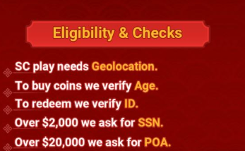
▲ 游戏内 Eligibility & Checks 页面：SC play needs Geolocation / To buy coins we verify Age / To redeem we verify ID / Over $2,000 we ask for SSN / Over $20,000 we ask for POA
Processing Fee
Please refer to Redemption Fee (see Loyalty Club section for tier-based rates).
手续费请参考 Redemption Fee（见 Loyalty Club 等级费率）。
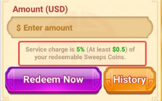
▲ 提现页面：Service charge is 5% (At least $0.5) of your redeemable Sweeps Coins
$25 Redemption Cap for Non-Purchasing Players
A new redemption restriction has been implemented for Tang Luck players.
Tang Luck 已实施新的提现限制。
Key Policy Rules:
- Non-Purchasing Players ($0 purchase): Total lifetime redemptions are strictly capped at $25.
非购买玩家（$0 购买）：终身总提现严格限制为 $25。
- Purchasing Players: The $25 cap is automatically removed immediately upon the completion of their first successful purchase.
购买玩家：完成首次成功购买后，$25 上限自动解除。
Redemption Methods
| Options | Information Required | Redemption Backend Information | Processing Time (Generally) | How to Revise? |
|---|
| PayPal | Players need to verify PayPal email address | PayPal
PayPal email | Within 24 Hours | Deletion Button |
| ACH | Players will be required to enter valid bank information | ach
The Last 4 digits of the player's bank account | Within 3 Days | Deletion Button |
| Debit Card | No information needs to be filled in by the player. However, it will display the schema (Visa or Master) of the Debit Card the player has used for purchases, as well as the first 6 digits and last 4 digits of the card number. If the player has used multiple Debit Cards to make purchases in the game before, the Pay to Debit Card page will display the latest Debit Card that the player used in the payment center. | card
The first 6 and last 4 digits of the Debit Card | Within 24 Hours | Please refer to General KB |
| Venmo | Players will be required to verify their phone number for Venmo Account | $Venmo
Player's phone number of Venmo | Within 24 Hours | Deletion Button |
| Refund (not an option for player) | No Information needed
Funds equivalent to the redemption amount will be transferred to the player through the refund of their previous purchases. | the channel of the previous purchases | Within 7 Days generally | No Need |
提现方式：PayPal（24小时内）、ACH（3天内）、Debit Card（24小时内）、Venmo（24小时内）、Refund（7天内）。
Note: Venmo is currently Not available.
注意：Venmo 目前不可用。
Redemption Account Unbind
1. ACH / Venmo / PayPal — Deletion Button
In the latest version of Tang Luck, players can delete (unbind) the bound redemption account by themselves. After deleting the bound account, players can bind a new redemption account.
在 Tang Luck 最新版本中，玩家可以自行删除（解绑）绑定的提现账户。删除后，玩家可以绑定新的提现账户。
2. Card (Card Redemption) — No Deletion Button
The card used for redemption cannot be revised, changed, or deleted. The system will automatically display the card used for the most recent Purchase. If the displayed card is not the one the player expects and the player wants to update: Please tell the player that the card is the most recent purchase and we are unable to revise, and suggest the player to select other redemption methods if they don't want to use this card to redeem.
用于提现的卡片无法修改、更改或删除。系统将自动显示最近购买使用的卡片。如果显示的卡片不是玩家期望的，请告知玩家该卡片是最近购买使用的，我们无法修改，建议玩家选择其他提现方式。
3. When Players Ask to Unbind / Change / Update Redemption Accounts (ACH / Venmo / PayPal)
Reference Reply:
Dear player,
Thank you for contacting us. We're glad to assist you.
Regarding your request to unbind your ACH redemption account (bank account ending in 1234), please note that this can be done directly on your side.
Please follow the steps below:
1. Click the Redeem button to enter the redemption method selection page.
2. You will see a "-" symbol at the top-left corner of the ACH redemption method.
3. Click the "-" symbol to delete the bound redemption account.
4. After deleting it, you may bind a new redemption account when you initiate a new redemption via ACH.
We hope this information helps. If you have any other questions or need further assistance, please feel free to contact us again.
Thank you for supporting Tang Luck, and we wish you a great gaming experience.
亲爱的玩家，感谢您联系我们。关于解绑 ACH 提现账户的请求，您可以直接在应用中操作：点击 Redeem 按钮进入提现方式选择页面，点击 ACH 方式左上角的 "-" 符号删除绑定的账户，删除后可在新的 ACH 提现中绑定新账户。
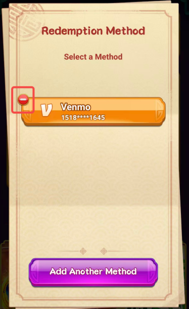
▲ Redemption Method 页面：点击 Venmo 左上角的 "-" 符号可删除绑定的提现账户
Cancel Redemption
Players have the ability to cancel their redemption request on their end. Typically, our assistance is not required for the cancellation process.
玩家可以自行取消提现请求。通常不需要客服协助。
Note: Once the player successfully cancels their redemption, the SC will be immediately returned to their game account balance.
注意：玩家成功取消提现后，SC 将立即返还到游戏账户余额。
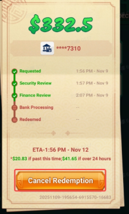
▲ 提现记录页面：点击 Cancel Redemption 按钮可取消正在处理中的提现请求
Redemption Delay Bonus
At present, there is also a limit on the PayPal redemption, and some players may not have access to PayPal when redeeming their rewards. If players inquire about this, kindly suggest using the other options (ACH/Card/Venmo) for their redemption.
目前 PayPal 提现有限制，部分玩家在提现时可能无法使用 PayPal。如玩家询问，建议改用其他选项（ACH/Card/Venmo）。
3-day Redemption Promise
Our game guarantees a 3-day redemption window. Each player's redemption page displays a specific Estimated Time of Arrival (ETA) and a corresponding delay bonus (e.g., $xx if the ETA is missed; $ if the delay exceeds 24 hours).
游戏保证 3 天提现窗口。每位玩家的提现页面显示预计到达时间（ETA）和相应的延迟奖励。
Please note that the delay bonus is not issued immediately upon missing the ETA. Instead, it is sent to the player's in-game inbox (Bonus SC) within two hours after the redemption status is marked as 'Redeemed' in our backend.
延迟奖励不会在错过 ETA 时立即发放。而是在后台将提现状态标记为 'Redeemed' 后两小时内，发送到玩家的游戏内收件箱（Bonus SC）。
Redemption Process is considered complete once it reaches any of the 3 'Redeemed' status in our backend.
当提现状态达到后台 3 个 'Redeemed' 状态中的任何一个时，提现流程视为完成。
Backend: The backend game flow displays the Redeem Delay Bonus reason.
后台：后台游戏流水显示 Redeem Delay Bonus 原因。
Example: NM3XT444 — Bonus SC sent on 2026-02-11 08:28:10 UTC+0
示例：NM3XT444 — Bonus SC 于 2026-02-11 08:28:10 UTC+0 发送。
🆔 KYC
- KYC 触发条件：通用规则（提现前需 KYC-ID，2000 以上需 KYC-POA）
- SSN 验证：通用规则
Tang Luck 专属 KYC 规则待补充
🎮 Game Events
🏪 Store
Players have the option to select various Offers from the store to receive GC along with corresponding free SC.
在 store 中选择 various offers，获得 GC 和相应的 free SC。
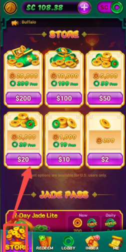
▲ Store 商店页面：玩家可选择不同档位的 GC + 免费 SC 套餐（$2 / $10 / $20 / $50 / $100 / $200）
🎫 Jade Pass
It's a purchase event. Players can purchase to receive the GC along with the corresponding free SC instantly, and enjoy 7 consecutive days of daily login bonuses.
Purchase event，购买后立即获得 GC 和 free SC，享受连续 7 天 daily login bonuses。
Three tiers of Jade Passes:
- 7-Day Jade Lite
- 7-Day Jade Plus
- 7-Day Jade Royal
Notes：
Players can purchase multiple Jade Passes, but the rebate bonuses work in specific ways:
可购买多个 Jade Passes，rebate bonuses 按特定方式运作。
- Same Tier Purchases： Bonus days stack, but the bonus amount doesn't increase.
Example: Purchasing 3 Jade Pass Lite → Gives 21 days (3 × 7 days) of 0.5 bonus SC per day, not 1.5 Bonus SC per day.
Bonus days 累加，但 bonus amount 不增加。例如：购买 3 个 Jade Pass Lite → 获得 21 天（3 × 7 天）每天 0.5 bonus SC，不是每天 1.5 Bonus SC。
- Different Tier Purchases： Bonuses from different tiers are claimed separately and simultaneously.
Example: Purchasing both Jade Pass Lite and Jade Pass Plus → Gives 0.5 bonus SC (from Lite) AND 2 bonus SC (from Plus) each day for the duration of both passes.
不同 tiers 的 bonuses 分别且同时领取。例如：同时购买 Jade Pass Lite 和 Jade Pass Plus → 每天获得 0.5 bonus SC（来自 Lite）和 2 bonus SC（来自 Plus），持续两个 pass 的有效期。
Backend:
- The backend displays the Purchase Type as week card for Jade Pass purchase.
Backend 显示 Purchase Type 为 week card。
- The backend game flow displays the Jade Pass Bonus reason.
Backend game flow 显示 Jade Pass Bonus reason。
* If player missed to collect the rewards, no compensation will be issued.
如果玩家错过领取奖励，将不予补偿。
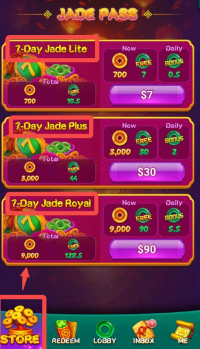
▲ Jade Pass 三档：Lite ($7)、Plus ($30)、Royal ($90)，每档包含 GC + 免费 SC + 每日 bonus SC
🆕 Newbie Package
The Newbie Package is a purchase promotion available to new players. It is displayed in the inbox interface, or a pop-up window will automatically appear upon login.
面向 new players 的 purchase promotion，显示在 inbox 中或登录时自动弹出。
Purchase Types (4 tiers in total)：
购买类型（共 4 档）：
- Newbie ($3): 150% SC → 3 free SC + 1.5 bonus + 450 GC
新手档（$3）：150% SC → 3 免费 SC + 1.5 bonus SC + 450 GC
- Level Up ($10): 150% SC → 10 free SC + 5 bonus + 1500 GC
升级档（$10）：150% SC → 10 免费 SC + 5 bonus SC + 1500 GC
- Power Boost ($20): 125% SC → 20 free SC + 5 bonus + 2500 GC
强力档（$20）：125% SC → 20 免费 SC + 5 bonus SC + 2500 GC
- Final Boost ($30): 120% SC → 30 free SC + 6 bonus + 3600 GC
终极档（$30）：120% SC → 30 免费 SC + 6 bonus SC + 3600 GC
Backend：The backend displays the Purchase Type as first_charge_gear for Newbie purchase.
后台显示 Purchase Type 为 first_charge_gear。
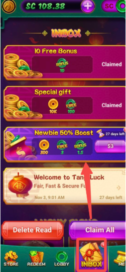
▲ Inbox 中的 Newbie 50% Boost 入口：点击 INBOX 查看新人促销
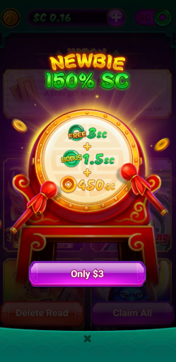
▲ Newbie 150% SC 弹窗：$3 得 3 free SC + 1.5 bonus SC + 450 GC
🎡 Fortune Wheel (Offline)
⚠️ 该活动已下线，仅供了解历史规则。
The promotion activity for New Players.
面向 New Players 的 promotion activity。
Fortune Wheel: It will pop up as a mandatory one-time exposure when a new player returns to the lobby from the slots machine for the first time, with no prior purchase record. After closing the Fortune Wheel, its entrance will be moved to the inbox page. Each device is eligible to participate in the event only once.
New player 首次从 slots machine 返回 lobby 且无 prior purchase record 时强制弹出，关闭后入口移至 inbox page，每台设备限参与一次。
Purchase Rules：
购买规则：
- Click either the fortune wheel itself or the "Spin" button at the bottom.
点击转盘本身或底部的 "Spin" 按钮。
- Complete a spin purchase of $10.
完成 $10 的 spin purchase。
- Once payment is successful, the wheel will start spinning.
支付成功后，转盘开始旋转。
- The wheel will land on a designated reward.
转盘停在指定奖励上。
- The player will receive the reward automatically.
玩家自动获得奖励。
- The event will then close and disappear.
活动随后关闭并消失。
点击转盘本身或底部 "Spin" 按钮 → 完成 $10 的 spin purchase → 支付成功后转盘开始旋转 → 转盘停在指定奖励 → 玩家自动获得奖励 → 活动关闭并消失。
Reward Types：
- 888 Free SC
- Jade Pendant: 1.5 Bonus SC + 8 Free SC + 2000 GC
- 888 GC
- 88 Bonus SC
- 8 Bonus SC
- Lantern (wait for confirmation)
- No Winning
奖励类型：888 Free SC、Jade Pendant（1.5 Bonus SC + 8 Free SC + 2000 GC）、888 GC、88 Bonus SC、8 Bonus SC、Lantern（待确认）、No Winning。
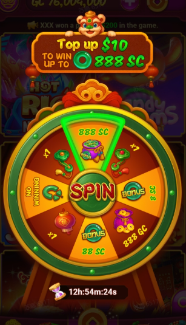
▲ Fortune Wheel 幸运转盘：Top up $10 可赢取最高 888 SC（已下线）
📦 Daily Package (Offline)
⚠️ 该活动已下线，仅供了解历史规则。
Regular Purchasing Promotion
常规购买促销。
Players can purchase one of three packages at different price.
玩家可以购买三档不同价格的套餐。
Package Items：
- $5 → 5.25 Bonus SC + 600 GC
- $15 → 15.75 Bonus SC + 2025 GC
- $50 → 52.5 Bonus SC + 8000 GC
套餐内容：$5 得 5.25 Bonus SC + 600 GC；$15 得 15.75 Bonus SC + 2025 GC；$50 得 52.5 Bonus SC + 8000 GC。
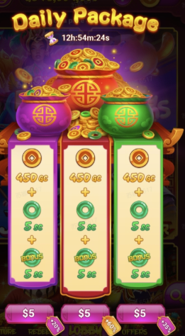
▲ Daily Package 每日礼包：三档 $5 可选，每档包含 450 GC + 5 SC + 5 bonus SC（已下线）
💰 Buy-in Rebate
Event Unlock Conditions
Currently, the event has two tiers only.
- This event is unlocked after the player's first purchase.
First purchase 后解锁。
- The initial tier requires purchases on 3 different days within 5 days.
初始 tier 要求 5 天内于 3 个不同 days purchase。
- After completing the 3-day requirement within 5 days, players may claim the buy-in rebate reward, and the next tier (5 purchase days within 7 days) will be unlocked.
5 天内完成 3-day requirement 后可领取 buy-in rebate reward，下一 tier（7 天内 purchase 5 天）解锁。
- If the initial tier expires before completion, the next tier (5 purchase days within 7 days) will still be unlocked.
初始 tier 在 completion 前过期，下一 tier（7 天内 purchase 5 天）仍将解锁。
- All subsequent buy-in rebates follow the 5 purchase days within 7 days rule.
后续 buy-in rebates 遵循 5 purchase days within 7 days 规则。
Event Time Calculation
The event period is calculated based on natural days (UTC-8), starting from the time of the player's first purchase.
按 natural days（UTC-8）计算，从 first purchase 时间开始。
Example: If a player makes their first purchase at 23:22 on January 26 (UTC-8), the event will end at 23:59:59 on January 30 (UTC-8). Even if only a few minutes remain on the first day, it still counts as one full natural day. In this example, valid purchase days are: January 26, 27, 28, 29, and 30 (UTC-8).
例如：玩家于 1 月 26 日 23:22（UTC-8）首次 purchase，活动将于 1 月 30 日 23:59:59（UTC-8）结束。即使第一天仅剩几分钟，仍计为一个完整 natural day。Valid purchase days：1 月 26、27、28、29、30 日（UTC-8）。
Event Rules
- To unlock the full rebate, players must make purchases on different valid days within the required period.
解锁 full rebate 需在 required period 内的不同 valid days purchase。
- Only the highest purchase amount per day is counted toward event progress.
每天仅 highest purchase amount 计入 event progress。
▲ Buy-in Rebate：5天内充值3天解锁返利，每日最高充值金额计入进度
👑 Loyalty Club
Club System
Club Level： Loyalty Level is granted by invitation, based on overall account history, account standing, and ongoing activity.
忠诚度等级通过邀请授予，基于整体账户历史、账户状态和持续活动。
Level setting（Total 6 levels）：
- Novice (level 0)
- Horse (level 1)
- Monkey (level 2)
- Panda (level 3)
- Tiger (level 4)
- Phoenix (level 5)
- Dragon (level 6)
共 6 个等级：Novice（0 级）、Horse（1 级）、Monkey（2 级）、Panda（3 级）、Tiger（4 级）、Phoenix（5 级）、Dragon（6 级）。
Club Benefits：
- Lower Redemption fee — Players from different club levels pay different redemption processing fees.
不同 club levels 的玩家支付不同的 redemption processing fees。
- Higher Daily Redemption Limit — At higher levels, players can redeem more per day.
更高 levels 的玩家每天可以 redeem 更多。
- Birthday Bonus (level 3+) — Players at PANDA Level 3 and above can claim an exclusive Birthday Gift during their birthday month.
Reward Distribution Time: 12:00 AM (UTC-8) on the Birthday day
Reward Distribution Method: Bonus SC via game inbox.
PANDA Level 3 及以上的玩家可以在生日月领取 exclusive Birthday Gift。Reward Distribution Time：生日当天 12:00 AM（UTC-8）。Reward Distribution Method：Bonus SC 通过 game inbox。
- Weekly Bonus (Level 3+) — Players at PANDA Level 3 and above can receive a weekly bonus SC.
Reward Distribution Time: Every Monday at 8:00 AM (UTC-8)
Reward Distribution Method: Bonus SC via game inbox.
PANDA Level 3 及以上的玩家可以每周领取 bonus SC。Reward Distribution Time：每周一 8:00 AM（UTC-8）。Reward Distribution Method：Bonus SC 通过 game inbox。
- VIP Priority Support (Level 4+) — Player will get VIP priority support, Dedicated Agents, Faster Replies, Quick help for your account and redemption issue.
玩家将获得 VIP priority support、Dedicated Agents、Faster Replies、Quick help for account 和 redemption issue。
Club Details / 等级详情
Attention: VIP status is granted by invitation based on overall account history, account standing, and ongoing activity.
注意：VIP 状态根据整体账户历史、账户信誉和持续活动情况通过邀请授予。
Loyalty Level
忠诚度等级 |
Redemption Fee
提现费率 |
Daily Redemption Limit
每日提现上限 |
Redemption Priority
提现优先级 |
Weekly Reward
(Bonus SC)
每周奖励 |
Birthday Gift
(Bonus SC)
生日礼物 |
VIP Priority Support
VIP 优先支持 |
| Novice (0) |
5.00% |
$5,000.00 |
/ |
/ |
/ |
/ |
| Horse (1) |
4.50% |
$10,000.00 |
/ |
/ |
/ |
/ |
| Monkey (2) |
4.00% |
$20,000.00 |
Priority review
优先审核 |
/ |
/ |
/ |
| Panda (3) |
3.50% |
$30,000.00 |
Faster processing
更快处理 |
Up to 2.8
最高 2.8 |
10 |
/ |
| Tiger (4) |
3.00% |
$40,000.00 |
Faster processing
更快处理 |
Up to 4.8
最高 4.8 |
20 |
Priority Support Queue
优先支持队列 |
| Phoenix (5) |
2.50% |
$50,000.00 |
Highest priority queue
最高优先级队列 |
Up to 6.8
最高 6.8 |
30 |
Faster Response
更快响应 |
| Dragon (6) |
2.00% |
$60,000.00 |
Highest priority queue
最高优先级队列 |
Up to 8.8
最高 8.8 |
50 |
Dedicated VIP Support
专属 VIP 支持 |
Loyalty Club 完整等级详情表格：从 Novice 到 Dragon 共 7 个等级，Redemption Fee 从 5.00% 降至 2.00%，Daily Redemption Limit 从 $5,000 提升至 $60,000。
Entry：点击 ME 页面左上角的 Club 图标进入 Loyalty 页面。
▲ ME 页面左上角 Club 图标：点击进入 Loyalty Club
▲ Novice (Lv.0) 等级权益：Redemption Fee 5%、Daily Redemption Limit $5,000
▲ Panda (Lv.3) 等级权益：Redemption Fee 3.50%、Daily Limit $30,000、Fast Redemption、Weekly Rewards
👥 Referral System (Offline)
⚠️ 该功能已下线，目前无邀请奖励功能。
Currently there is no invitation reward, even if players have a referral code bind feature. If players are asking about the invitation function, please tell the player that there is no Referral feature just like before.
目前没有 invitation reward，即使玩家有 referral code bind feature。如玩家询问 invitation function，请告知没有 Referral feature。
Script:
话术：
Dear Player,
Sorry for the inconvenience.
Currently, we have no invitation function. However, please rest assured that we are actively working towards implementing one.
We greatly appreciate your understanding and patience during this process.
亲爱的玩家，
很抱歉给您带来不便。
目前我们没有邀请功能。但请放心，我们正在积极努力实现该功能。
非常感谢您在此过程中的理解与耐心。
🏷️ TAG
通用 TAG 请查阅 通用-CS-TAG
Tang Luck 专属 TAG 待补充 — 请项目组提供常见客诉标签清单
🎁 Tomorrow Bonus (Offline)
⚠️ 该活动已下线，仅供了解历史规则。
Players will receive an in-game email notifying them about the Tomorrow Bonus.
玩家将收到 in-game email 通知 Tomorrow Bonus。
- The Tomorrow Bonus is available daily.
明日奖励每日可领取。
- Players can claim the bonus in-game once the reward has refreshed.
奖励刷新后，玩家可在游戏内领取。
Refresh Time： The Tomorrow Bonus refreshes every day at 12:00 AM (UTC-8).
刷新时间：明日奖励每天于 UTC-8 12:00 AM 刷新。
Bonus Rewards：
- Players can claim the Tomorrow Bonus a total of 30 times.
玩家总共可领取 30 次明日奖励。
- The total reward is 10 SC.
总奖励为 10 SC。
- The daily Tomorrow Bonus is random.
每日明日奖励是随机的。
注意：Do not disclose the reward range to players — simply emphasize that the Tomorrow Bonus is distributed randomly and that 10 SC is the total reward.
请勿向玩家透露奖励范围，只需强调明日奖励随机发放，总奖励为 10 SC。
Backend： The backend game flow displays the Tomorrow Bonus reason.
后台游戏流水显示 Tomorrow Bonus 原因。
▲ Tomorrow Bonus 站内信："$ Reserved for You $ — Tomorrow Bonus Inside"，提醒玩家次日登录领取（bonus SC 需 5x playthrough）
🎯 Rewards Center
Free Bonus
Players can access the Rewards Center via ME page → Rewards Center.
通过 ME page → Rewards Center 进入。
Currently, the Rewards Center includes four sections:
包含四个 sections：
- Blue Scratch Card
Available every 15 minutes
Random reward: Up to 5 SC
Players receive one card immediately; the countdown starts only after it is claimed
每 15 分钟可用，随机奖励最高 5 SC，玩家立即获得一张 card，countdown 在领取后才开始。.
- Red Scratch Card
Available every 3 hours
Random reward: Up to 25 SC
Players receive one card immediately; the countdown starts only after it is claimed
每 3 小时可用，随机奖励最高 25 SC，玩家立即获得一张 card，countdown 在领取后才开始。.
- Wild Machine
Every 5 Red Scratch Cards completed grants 1 wheel spin
Supposed maximum win: up to 100 SC
每完成 5 个 Red Scratch Cards 获得 1 次 wheel spin，最高 win 100 SC。
- Plinko
Every 3 wheel spins grants 1 Plinko play
Potential payout: up to 250×
每 3 次 wheel spins 获得 1 次 Plinko play，potential payout 最高 250×。
Backend： The backend game flow displays the "Blue Scratch Card/Red Scratch Card/Wild Machine/PLINKO" reason.
后台游戏流水显示 "Blue Scratch Card/Red Scratch Card/Wild Machine/PLINKO" 原因。
▲ Rewards Center 奖励中心：Blue Scratch Card（最高 5 SC）、Red Scratch Card（最高 25 SC）、Wild Machine（最高 100 SC）、Plinko（最高 250×）
Login Bonus
1. Daily Bonus System
Players are eligible to claim a Free Daily Bonus every day. Please note the following logic:
每天可领取 Free Daily Bonus。
- a. Streak Reset： Missing a single day will reset the daily reward progression back to Day 1.
连续签到重置：错过一天将重置每日奖励进度回 Day 1。
- b. "Remind Me" Feature： Players may select the "Remind Me" option, which automatically adds a notification to their device's system calendar.
"提醒我" 功能：玩家可选择 "Remind Me" 选项，自动添加通知到设备系统日历。
- c. Refresh Schedule： The Daily Bonus now refreshes at 12:00 UTC-8.
刷新时间：每日奖励现于 UTC-8 12:00 刷新。
2. Accumulated Rewards
In addition to the daily claim, players can track their Total Accumulated Days at the top of the interface.
除 daily claim 外，可在 interface 顶部追踪 Total Accumulated Days。
- a. Milestone Bonuses： Extra rewards are unlocked once the player reaches specific accumulation targets.
里程碑奖励：玩家达到特定累计目标后解锁额外奖励。
- b. Persistent Progress： Unlike the daily streak, accumulated days will not reset, even if a player misses their daily bonus.
持久进度：与每日连续签到不同，累计天数即使错过每日奖励也不会重置。
Backend： The backend game flow displays the "Sign Bonus" reason.
后台游戏流水显示 "Sign Bonus" 原因。
📋 Daily Mission & Challenges
- Players can complete the corresponding daily missions and daily challenges to earn reward (GC/SC/Mission Points 🔥).
玩家可完成相应的每日任务和每日挑战以获得奖励（GC/SC/任务点数 🔥）。
- The "🔥" collected from missions or challenges can be used to unlock the treasure chest for Bonus SC.
从任务或挑战中收集的 "🔥" 可用于解锁宝箱获得 Bonus SC。
▲ Blazing Challenge 每日挑战：完成任务获得 Mission Points（🔥），进度条满 500 可解锁宝箱获得 Bonus SC
💎 Jackpot
1. Event Overview
The Tangluck Jackpot is an opt-in, progressive jackpot system integrated into the slot machine experience. Players can choose to contribute an additional spin cost to participate, increasing their potential winnings.
Tangluck Jackpot 是 opt-in progressive jackpot system，集成在 slot machine 中，玩家可贡献额外 spin cost 参与，增加 potential winnings。
Participation Mechanics：
- Access： Players can enter the event via the "Tang Luck" icon located on the main Lobby page.
玩家可通过 main Lobby page 上的 "Tang Luck" icon 进入活动。
- Opt-in/Opt-out： Upon entering the event page, players may set their desired Jackpot contribution amount.
进入 event page 后，玩家可设置 desired Jackpot contribution amount。
- Participating： By setting a value above 0.00, an extra SC is deducted from the player's balance with every spin of the slot machine.
设置 value 高于 0.00 后，每次 spin slot machine 将从 balance 扣除 extra SC。
- Opting Out： Players can opt out of the event by adjusting their contribution amount to 0.00.
玩家可将 contribution amount 调整为 0.00 以 opt out。
- Reward Scaling： The jackpot prize pool scales with the contribution amount; the higher the contribution set by the player, the larger the potential Jackpot prize pool triggered.
Jackpot prize pool 随 contribution amount 缩放；contribution 越高，触发的 potential Jackpot prize pool 越大。
- Prize Reset： Once a Jackpot Pool Prize is claimed, the pool is automatically reset.
Jackpot Pool Prize 被 claim 后，pool 自动 reset。
2. Interface
The Tangluck Jackpot is seamlessly integrated into both the Lobby and the gameplay environment.
Tangluck Jackpot 无缝集成在 Lobby 和 gameplay environment 中。
- Lobby Entry： A "Tang Luck" icon is displayed at the bottom of the Lobby page for easy access.
Lobby page 底部显示 "Tang Luck" icon 以便访问。
- Event Page： The event page displays the four distinct Jackpot prize pools. Players can select any of the four pools to view the history and prize claim records.
Event page 显示四个不同的 Jackpot prize pools，玩家可选择任意 pool 查看 history 和 prize claim records。
- In-Game Display： The current Jackpot Prize Pool amount is dynamically displayed on the slot machine game page during play, ensuring constant visibility of the potential reward.
当前 Jackpot Prize Pool amount 在 slot machine game page 上动态显示，确保 potential reward 始终可见。
3. Backend
The Backend will show Jackpot bet for each Jackpot Cost and Jackpot Chance for the total Jackpot Cost of the last round (enter the slots machine → exit the slots machine). tang luck jackpot is the reward of Jackpot.
Backend 显示每个 Jackpot Cost 的 Jackpot bet 和最后一轮 total Jackpot Cost 的 Jackpot Chance（enter slots machine → exit slots machine）。tang luck jackpot 是 Jackpot 的 reward。
▲ Lobby 页面底部 Tang Luck Jackpot 入口：显示当前奖池金额 SC 17,274.94
▲ Jackpot 设置页面：0.00 SC = Jackpot Off，玩家可调整贡献金额
▲ Jackpot 开启：1.00 SC Chance x10，Extra 1.00 SC per spin，显示四个奖池（Grand / Daily / Hourly / Quick）
▲ Recent Prize Winners：显示最近中奖玩家列表（Player ID、Time、Prize）
▲ 后台记录：显示 Jackpot bet（每轮额外 SC 成本）和 Jackpot Chance（总成本），以及 tang luck jackpot 奖励
🎉 Jackpot Cheer Up
New Social Feature: Jackpot "Likes"
Celebrate big wins with the community!
全新社交功能：Jackpot "点赞"，与社区一起庆祝大奖！
When a player triggers a Jackpot, a notification will appear on the game page.
当玩家触发 Jackpot 时，游戏页面会出现通知。
Other players can click the "Like" button to celebrate the win.
其他玩家可以点击 "Like" 按钮庆祝中奖。
Clicking "Like" will trigger a special Like Reward (Bonus SC) for the participants!
点击 "Like" 将为参与者触发特殊的 Like Reward（Bonus SC）！
Backend: The Backend will show Cheer Bonus for each reward.
后台：后台将显示每次奖励的 Cheer Bonus。
▲ Jackpot Cheer Up：其他玩家可点击 "Cheer" 按钮庆祝大奖，参与者可获得 Bonus SC 奖励
>
本文档为 Tang Luck 项目组专属规则，通用规则请查阅通用知识库。
↑
📋 Updates
| 日期 | 更新内容 |
|---|
| 2026-06-24 |
- Loyalty Club Details 优化：将 broken image 替换为完整 HTML 表格（7 个等级 × 7 列），包含 Redemption Fee、Daily Redemption Limit、Redemption Priority、Weekly Reward、Birthday Gift、VIP Priority Support 的完整数据
|
| 2026-06-24 |
- Redemption 章节全面补充：新增 Minimum Redemption Amount、Played SC / Bonus SC Rules、KYC Verification Required（含 Eligibility & Checks 截图）、Processing Fee（含 Redemption 页面截图）、$25 Redemption Cap for Non-Purchasing Players、Redemption Methods 完整表格、Redemption Account Unbind（含解绑截图）、Cancel Redemption（含取消截图）、Redemption Delay Bonus
- FAQ 全面扩充：新增 Purchase / Redemption / Account / KYC / Game / Technical 等 20+ 个常见问题及标准回复
- 新增 4 张游戏界面示意图
|
| 2026-06-24 |
- Account 章节新增：新增 Account Registration（注册）、Other Binding Ways（第三方绑定）、Account Revise（修改邮箱/密码）、Account Deletion（删除账户）、Account Restoration（恢复账户）、Merge Account Function（合并账户）、How to Freeze a Player's Account（冻结账户）
- FAQ 补充：新增 Account 相关常见问题（Change Email / Delete Account / Restore Account）
- 新增 13 张游戏界面示意图
|
| 2026-06-24 |
- Jackpot 章节补充：新增 Jackpot Cheer Up 社交点赞功能（含游戏界面截图）
- Setting 章节补充：新增 Privacy Mode & Big Win Feed 功能说明（含游戏界面截图）
- Loyalty Club 章节补充：新增完整等级详情表格（Redemption Fee / Daily Limit / Priority / Weekly / Birthday / VIP）
- Purchase 章节补充：新增 Crypto Purchase Channel、Purchase Packages 说明、GC-Only Purchase Issues SOP（含充值页面截图）
- 更新 Citcon Cash App 为已下线状态
- 新增 4 张游戏界面示意图
|
| 2026-06-24 |
- Game Events 续更：新增 Tomorrow Bonus（已下线）、Rewards Center（Free Bonus + Login Bonus）、Daily Mission & Challenges、Tang Luck Jackpot（4 奖池渐进式奖池系统）
- 新增 8 张活动界面示意图
|
| 2026-06-24 |
- Game Events 专属活动更新：新增 Store 商店、Jade Pass 翡翠通行证、Newbie Package 新人礼包、Fortune Wheel 幸运转盘（已下线）、Daily Package 每日礼包（已下线）、Buy-in Rebate 连续充值返利、Tang Luck Loyalty Club 忠诚度俱乐部（6级体系+5项权益）、Referral System 推荐系统（已下线+话术）
- 新增 10 张活动界面示意图
|
| 2026-06-24 |
- Bonus SC 详细内容更新：新增 How to get Bonus SC、Unplayed SC 定义与获取方式、Played SC 定义、Playthrough 5x 详解、Account has bonus SC 的 4 条规则及示例、Forfeit Bonus SC 游戏内操作流程（含弹窗截图）、Forfeit Bonus SC Issue SOP（Tier 1 处理流程 + Critical Requirements + 站内信模板）
|
| 2026-06-24 |
- 新增 General 通用介绍章节，包含：Game Introduction、Played SC & Forfeited SC、Bonus SC (Free)、Bonus SC How It Works、SC/GC 模式切换
- 新增 ME Page 详情：Setting（Sound&Music、Logout、Promo Code、About Tang Luck）、How It Work（Redemption Rules、Limits & Fees、Safety & Privacy、Fair Games、Eligibility & Checks、Bonus SC）、Redemptions、Transaction（Balance / Game Play / Specific Game Play）、Help
- 新增 Download 游戏下载指引
- 新增 FAQ 玩家常问问题（Can earn real money / Transaction / How to play with GC/SC / Sign up bonus）
- 新增 14 张游戏界面示意图
- 新增图片响应式样式（.img-block、.img-row、.img-caption）
- 新增 FAQ 表格样式（.faq-table）
|
| 2026-06-23 |
- 初始版本上线，包含 Tang Luck 项目组基础框架
- 新增 Purchase 充值渠道状态表
- 新增 Redemption 提现方式状态表
- 新增 KYC 通用规则引用
- 待补充：专属充值规则、活动规则、提现限额、手续费、KYC规则、机台/活动规则、TAG
|